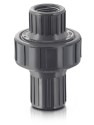
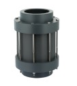

Check Valves
At Harrington, we supply industry recognized check valves, available in an extensive range of brands, styles, connection types, materials, and specifications. These valves are essential for preventing backflow. Our material options include PVC, PTFE, Polypropylene, CPVC, PVDF, and PFA. Choose your product to request a quote and get purchasing information.

Plast-O-Matic CKM075EPS-PF CKM Series 3/4 IN Diaphragm Check Valves Normally Closed, Socket, PVDF Body, EPDM Sealper EA · Sign in for price- Plast-O-Matic CKM075EPS-PP CKM Series 3/4 IN Diaphragm Check Valves Normally Closed, Socket, Polypropylene Body, EPDM Sealper EA · Sign in for price
- Plast-O-Matic CKM075EPS-PV CKM Series 3/4 IN Diaphragm Check Valves Normally Closed, Socket, PVC Body, EPDM Sealper EA · Sign in for price
- Plast-O-Matic CKM075V-CP CKM Series 3/4 IN Diaphragm Check Valves Normally Closed, FNPT, CPVC Body, FKM Sealper EA · Sign in for price
- Plast-O-Matic CKM075VFL-CP CKM Series 3/4 IN Diaphragm Check Valves Normally Closed, Flanged, CPVC Body, FKM Sealper EA · Sign in for price
- Plast-O-Matic CKM075VFL-PF CKM Series 3/4 IN Diaphragm Check Valves Normally Closed, Flanged, PVDF Body, FKM Sealper EA · Sign in for price
- Plast-O-Matic CKM075VFL-PP CKM Series 3/4 IN Diaphragm Check Valves Normally Closed, Flanged, Polypropylene Body, FKM Sealper EA · Sign in for price
- Plast-O-Matic CKM075VFL-PV CKM Series 3/4 IN Diaphragm Check Valves Normally Closed, Flanged, PVC Body, FKM Sealper EA · Sign in for price
- Plast-O-Matic CKM075V-PF CKM Series 3/4 IN Diaphragm Check Valves Normally Closed, FNPT, PVDF Body, FKM Sealper EA · Sign in for price
- Plast-O-Matic CKM075V-PP CKM Series 3/4 IN Diaphragm Check Valves Normally Closed, FNPT, Polypropylene Body, FKM Sealper EA · Sign in for price
- Plast-O-Matic CKM075V-PV CKM Series 3/4 IN Diaphragm Check Valves Normally Closed, FNPT, PVC Body, FKM Sealper EA · Sign in for price
- Plast-O-Matic CKM075VS-CP CKM Series 3/4 IN Diaphragm Check Valves Normally Closed, Socket, CPVC Body, FKM Sealper EA · Sign in for price
- Plast-O-Matic CKM075VS-PF CKM Series 3/4 IN Diaphragm Check Valves Normally Closed, Socket, PVDF Body, FKM Sealper EA · Sign in for price
- Plast-O-Matic CKM075VS-PP CKM Series 3/4 IN Diaphragm Check Valves Normally Closed, Socket, Polypropylene Body, FKM Sealper EA · Sign in for price
- Plast-O-Matic CKM075VS-PV CKM Series 3/4 IN Diaphragm Check Valves Normally Closed, Socket, PVC Body, FKM Sealper EA · Sign in for price
- Plast-O-Matic CKM100EP-CP CKM Series 1 IN Diaphragm Check Valves Normally Closed, FNPT, CPVC Body, EPDM Sealper EA · Sign in for price
- Plast-O-Matic CKM100EPFL-CP CKM Series 1 IN Diaphragm Check Valves Normally Closed, Flanged, CPVC Body, EPDM Sealper EA · Sign in for price
- Plast-O-Matic CKM100EPFL-PF CKM Series 1 IN Diaphragm Check Valves Normally Closed, Flanged, PVDF Body, EPDM Sealper EA · Sign in for price
- Plast-O-Matic CKM100EPFL-PP CKM Series 1 IN Diaphragm Check Valves Normally Closed, Flanged, Polypropylene Body, EPDM Sealper EA · Sign in for price
- Plast-O-Matic CKM100EPFL-PV CKM Series 1 IN Diaphragm Check Valves Normally Closed, Flanged, PVC Body, EPDM Sealper EA · Sign in for price
- Plast-O-Matic CKM100EP-PF CKM Series 1 IN Diaphragm Check Valves Normally Closed, FNPT, PVDF Body, EPDM Sealper EA · Sign in for price
- Plast-O-Matic CKM100EP-PP CKM Series 1 IN Diaphragm Check Valves Normally Closed, FNPT, Polypropylene Body, EPDM Sealper EA · Sign in for price
- Plast-O-Matic CKM100EP-PV CKM Series 1 IN Diaphragm Check Valves Normally Closed, FNPT, PVC Body, EPDM Sealper EA · Sign in for price
- Plast-O-Matic CKM100EPS-CP CKM Series 1 IN Diaphragm Check Valves Normally Closed, Socket, CPVC Body, EPDM Sealper EA · Sign in for price
- Plast-O-Matic CKM100EPS-PF CKM Series 1 IN Diaphragm Check Valves Normally Closed, Socket, PVDF Body, EPDM Sealper EA · Sign in for price
- Plast-O-Matic CKM100EPS-PP CKM Series 1 IN Diaphragm Check Valves Normally Closed, Socket, Polypropylene Body, EPDM Sealper EA · Sign in for price
- Plast-O-Matic CKM100EPS-PV CKM Series 1 IN Diaphragm Check Valves Normally Closed, Socket, PVC Body, EPDM Sealper EA · Sign in for price
- Plast-O-Matic CKM100VFL-CP CKM Series 1 IN Diaphragm Check Valves Normally Closed, Flanged, CPVC Body, FKM Sealper EA · Sign in for price
- Plast-O-Matic CKM100VFL-PF CKM Series 1 IN Diaphragm Check Valves Normally Closed, Flanged, PVDF Body, FKM Sealper EA · Sign in for price
- Plast-O-Matic CKM100VFL-PP CKM Series 1 IN Diaphragm Check Valves Normally Closed, Flanged, Polypropylene Body, FKM Sealper EA · Sign in for price
- Plast-O-Matic CKM100VFL-PV CKM Series 1 IN Diaphragm Check Valves Normally Closed, Flanged, PVC Body, FKM Sealper EA · Sign in for price
- Plast-O-Matic CKM100V-PF CKM Series 1 IN Diaphragm Check Valves Normally Closed, FNPT, PVDF Body, FKM Sealper EA · Sign in for price
- Plast-O-Matic CKM100V-PP CKM Series 1 IN Diaphragm Check Valves Normally Closed, FNPT, Polypropylene Body, FKM Sealper EA · Sign in for price
- Plast-O-Matic CKM100V-PV CKM Series 1 IN Diaphragm Check Valves Normally Closed, FNPT, PVC Body, FKM Sealper EA · Sign in for price
- Plast-O-Matic CKM100VS-CP CKM Series 1 IN Diaphragm Check Valves Normally Closed, Socket, CPVC Body, FKM Sealper EA · Sign in for price
- Plast-O-Matic CKM100VS-PF CKM Series 1 IN Diaphragm Check Valves Normally Closed, Socket, PVDF Body, FKM Sealper EA · Sign in for price
- Plast-O-Matic CKM100VS-PP CKM Series 1 IN Diaphragm Check Valves Normally Closed, Socket, Polypropylene Body, FKM Sealper EA · Sign in for price
- Plast-O-Matic CKM100VS-PV CKM Series 1 IN Diaphragm Check Valves Normally Closed, Socket, PVC Body, FKM Sealper EA · Sign in for price

Plast-O-Matic CKS150EPFL-NC-CP CKS Series 1-1/2 IN Spring Check Valves Normally Closed, Flanged, CPVC Body, EPDM Sealper EA · Sign in for price- Plast-O-Matic CKS150EPFL-NC-PF CKS Series 1-1/2 IN Spring Check Valves Normally Closed, Flanged, PVDF Body, EPDM Sealper EA · Sign in for price